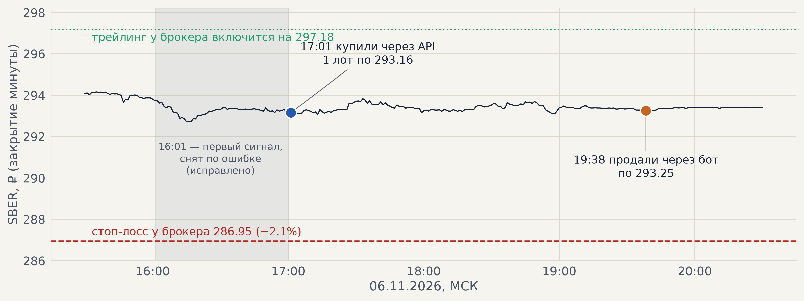
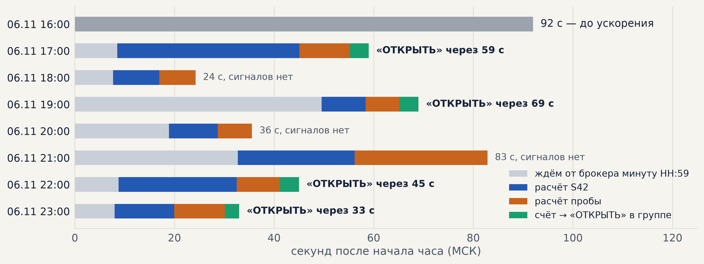
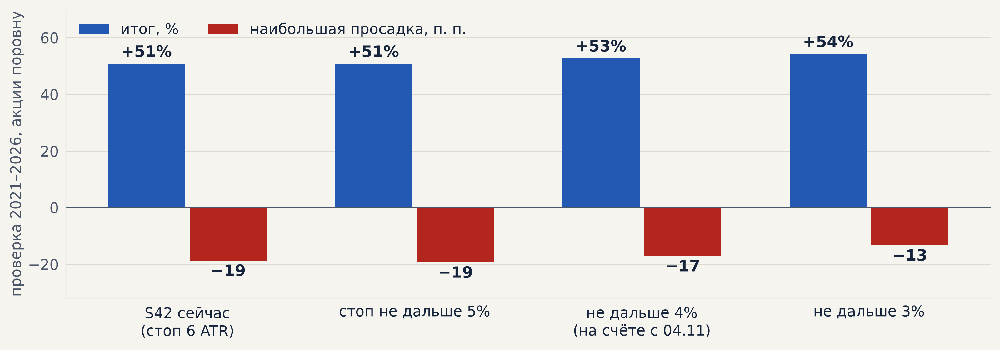
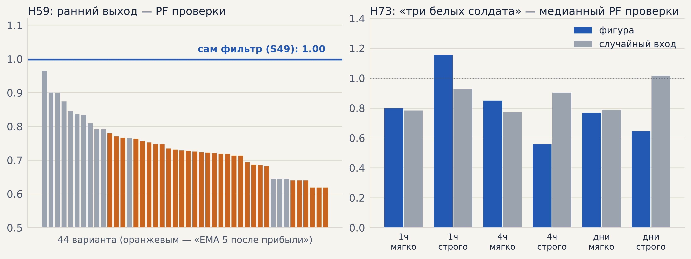
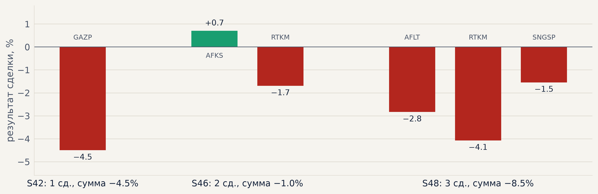
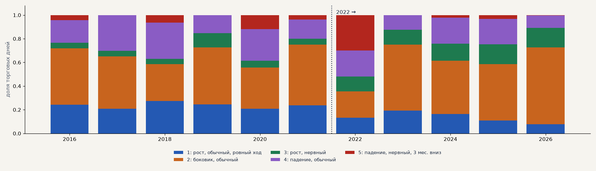
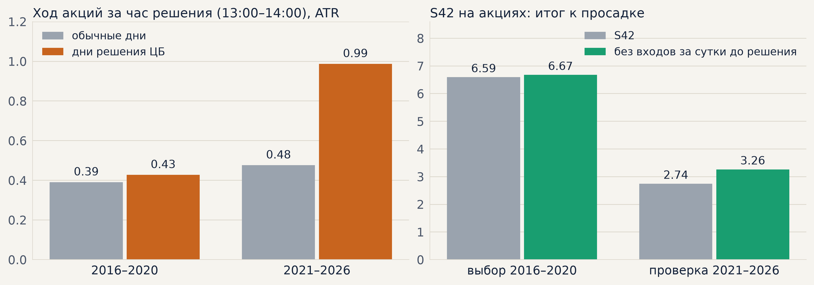
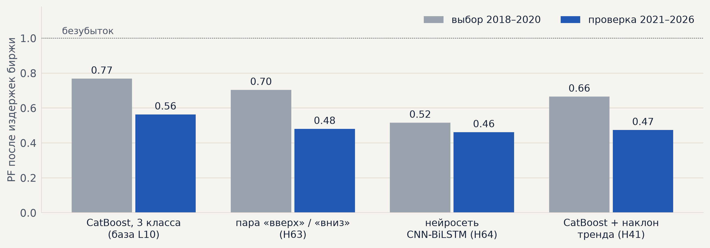
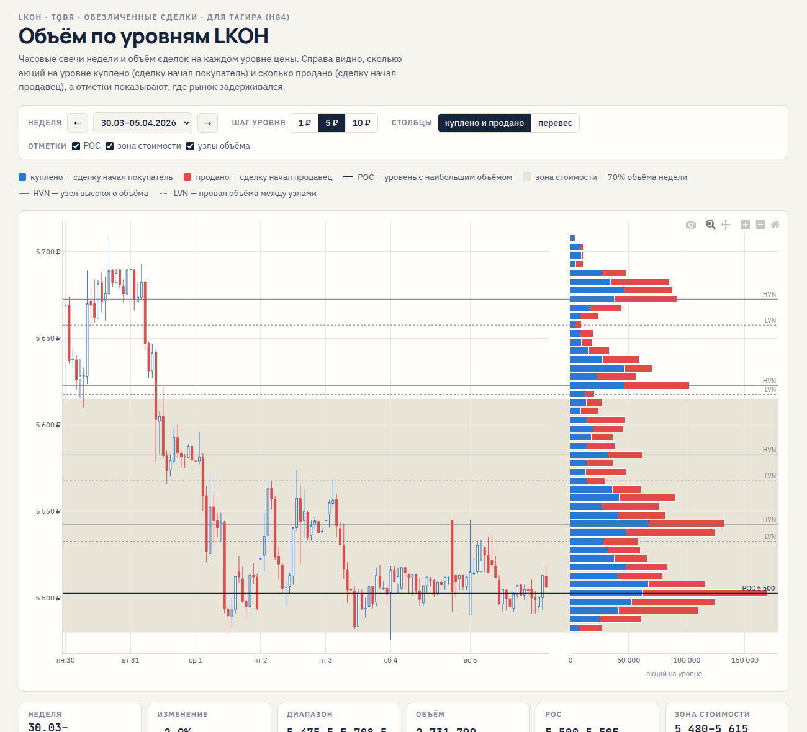
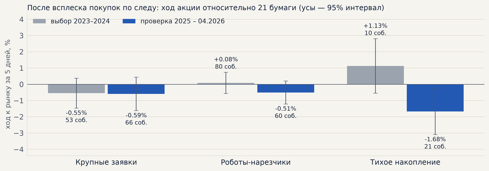

| дата | что | зачем |
|---|---|---|
| 03.11 | Найдена и исправлена задержка входов S42; честный бумажный прогон по каждому часу; запуск контура в HH:00 с ожиданием минуты HH:59 | без этого на счёт не попала бы ни одна сделка |
| 04.11 | Созвон и план недели (T55–T61); проба P42; стопы 3/4/5% (H71, S60–S62); ранний выход для стратегии по фильтру (H59, S63); «три белых солдата» (H73) | задачи Дениса из плана недели |
| 04.11 | Записка Тимуру: есть ли утечка в бэктесте и откуда две убыточные сделки; на счёте стоп не дальше 4% | вопрос созвона: «инференс ждал будущего» |
| 05.11 | Проверка контура перед пробой (/check — замечаний нет); вечерний созвон — идеи и данные | S42 за четверг сигнала не дал |
| 06.11 | Проба P42: порог 1.5 → 1.0 → 0.5 ATR; 17:01 покупка через API, 19:38 закрытие; исправлено снятие сигнала; ускорение контура | проверить весь путь сделки на боевом счёте |
| 07.11 | Второй случай снятия сигнала исправлен; проба выключена; счёт сверен у брокера: 14 999.85 ₽, позиций нет | чтобы контур не слал лишнего и не терял сигналы S42 |
| 08.11 | Гипотезы созвона 05.11 (H75–H77, H60) и банка (H63, H64, H41, H70, H47, H79); календарь заседаний ЦБ 2016–2026 собран из архива сайта ЦБ | «сначала гипотеза в банке, потом проверка» |
| 08.11 | Файлы Тимура → H81, H40, H42 по его коду; позиции юрлиц Мосбиржи (H80, H82), H09; страница для Тагира (H84); банк принимает Word; «скептик» ко всем проверкам дня, новые H85–H87 | идея Дениса: не пропустить важное «шагом в сторону» |
| 09.11 | Созвон с Тимуром; сбор ленты сделок 21 акции каждые 15 мин на Диск; H83 по ленте 2023–2026 (70 ГБ потоком); H88 — данные Мосбиржи «тип А»; место на сервере 13 → 21 ГБ | решения созвона 09.11 |
Правило S42 с порогом входа ниже (вход при ходе ≥ 0.5 ATR вместо 3), 1 лот SBER. Сигнал в 17:00:59 → «Исполнить» в 17:01:10 → куплено через API в 17:01:18 по 293.16 (сигнал 293.26) → у брокера встали стоп и трейлинг → 19:38 закрыто через бот, обе стоп-заявки сняты.

Расчёт сигналов шёл 26 секунд: контур читал весь файл минуток с 2015 года ради одной последней строки, а кэш пересобирался каждый час. Теперь — хвост файла и дописываемый кэш (данные те же до строки).

Урок: бумажные прогоны — только на данных, обрезанных по моменту запуска, и проверять оба прохода счёта в одном часе. На каждую ошибку добавлен тест.
S42 на GAZP, SBER, LKOH: стоп = ближний из «6 ATR» и «X% от входа». Проверка 2021–2026, штатный симулятор.

Из 125 сделок, ушедших в −3%, не в минус закрылись только 14% — «пересиживать» почти бесполезно. От гэпа потолок не спасает (худшая сделка с потолком 3% — −4.3%). На выборе 2016–2020 итог на 3 п. п. ниже. На счёте с 04.11 — 4%.

Закрытые 03–08.11, % на сделку. S42 — SBER, GAZP, LKOH; S46 и S48 — 19 акций, без денег.

GAZP у S42 — вход 30.10, закрыт стопом 6 ATR; с потолком 3% был бы около −3%. Сверка с бэктестом: S42 «мало сделок», S46 «в норме», S48 «внимание». На деньги S46/S48 не включаем (решение 04.11). Открыто на бумаге: S46 ALRS, AFKS, SNGSP; S48 SNGSP, ALRS, AFLT.
Неделя часовых свечей перед каждым днём → 15 признаков → 5 режимов (настроены только по 2016–2020). Доли торговых дней по годам, GAZP, SBER, LKOH.

«Ровного роста» стало меньше (24% → 14% дней), «нервного роста» — больше (6% → 15%), 2022 год почти на треть — «нервное падение». S42 работает почти во всех режимах, лучше всего — в боковике (PF 1.67 и до, и после). Отключить убыточный режим не вышло: фильтр поднимает PF проверки 1.37 → 1.43, но итог к просадке не растёт, и при другом числе режимов эффект пропадает.
| гипотеза | что проверили | итог |
|---|---|---|
| H75 карта режимов | S42 только в режимах, где он не терял на 2016–2020 | нетPF 1.37 → 1.43, но итог к просадке 2.71 → 2.67; неустойчиво к числу режимов |
| H76 «скептик» к H73 | «три белых солдата» не как стратегия, а как подтверждение входа S42 | нетстрогая фигура перед входом — 4 и 6 раз; мягкая — эффект меняет знак |
| H77 15-минутки | импульс S42 на 15-минутных свечах, 12 вариантов, выбор по 2016–2020 | нетпроверка: PF 1.21 против 1.37, просадка −31% против −19% |
| H60 свежие месяцы | акции по тренд-фильтру 01.06–08.11.2026 (вопрос Тимура) | как держание+24.8% против +28.6% «купить и держать», в позиции 37–50% времени |
| H78, H79 | Telegram-каналы и Пульс; экономический календарь | H78 ждёт данныхH79 дакалендарь ЦБ собран — слайд 13 |
Что это значит. Простые вариации S42 — режимы, фигуры, таймфрейм — не улучшают его на проверке. Дальше — новые данные (MOEX, обезличенные сделки, внешние источники) и признаки режима в модели, а не жёсткие правила.
Календарь заседаний Банка России 2016–2026 из архива сайта ЦБ: 88 плановых (внеочередные не в фильтре — их объявляли меньше чем за сутки). S42 на GAZP, SBER, LKOH без новых входов за 24 ч до 13:30 дня решения.

Проверка: PF 1.37 → 1.44, итог к просадке 2.74 → 3.26. Скептик: на 18 других акциях сделки за сутки до решения −1.07% и −0.93% (выбор / проверка) против +0.38% и +0.12% у остальных; случайные календари так плохи в 0.3% и 1.4% случаев. Держать позицию через решение не вредно. Предложение: правило в контур, ближайшее заседание 18.12.
Одинаковые настройки: LKOH, тренд-гейт C, годовой walk-forward 2018–2026, 3 seed, издержки биржи. Меняется только сама модель.

H63 — две модели «вверх» / «вниз» вместо одной: хуже. H64 — нейросеть торгует в 1.7–5 раз чаще, а средняя сделка даже до издержек в 3–16 раз меньше. H41 — наклон тренда за 1–7 дней и sin / cos угла: направление не предсказывает, в модели хуже (серебро тоже: 0.84 против 0.91). Все варианты в минусе — модели не хватает информации в часовых свечах.
| гипотеза | что проверили | итог |
|---|---|---|
| H79 календарь | S42 без входов за сутки до решения ЦБ | дапроверка: PF 1.37 → 1.44, итог к просадке 2.74 → 3.26; повторилось на 18 акциях |
| H70 плечо | плечо 2 только в «боковике» (H75), плата 20% годовых | нет2.68 против 2.74 без плеча; но против «плеча на всё» лучше: просадка −26% вместо −41% |
| H47 «Черепахи» | пробой 55 дней против 1000 наборов случайных входов в том же тренде; вместе с S42 | нетлучше 89–98% случайных, но не в обоих периодах; с S42 совпадает в 80% сделок |
| H63 пара моделей | «вверх» и «вниз» отдельно вместо 3 классов (LKOH) | нетPF 0.70 / 0.48 против 0.77 / 0.56 |
| H64 нейросеть | CNN-BiLSTM конвейера вместо CatBoost (LKOH) | нетPF 0.52 / 0.46 против 0.77 / 0.56 |
| H41 наклон тренда | наклон за 24 / 72 / 168 ч и sin / cos угла: связь с ходом, затем в модель (LKOH, серебро) | нетсвязи с направлением нет; модель хуже: LKOH 0.47 против 0.56, серебро 0.84 против 0.91 |
| H69, H72 | тренд-фильтр к модели; симуляция депозита | уже былоH58 (L09) и раздел 7 launch_questions — закрыты ссылкой |
Модель — с оговоркой скептика (следующий слайд): база L10 в 2021 и 2024 годах не торговала, а нейросеть шла без фильтра. На честной базе (100 деревьев, торгует все годы) H63 и H41 — тоже «нет»; H64 при равном числе сделок не досчитана.
Три отдельных агента прочитали код проверок, не видя моих выводов, и искали, где тест мог ошибиться и какой «шаг в сторону» сделать. Правило записано до расчётов: вывод меняется, только если вариант повторяется на данных, которые он не видел (другие бумаги или период).
| гипотеза | что нашёл скептик | что вышло |
|---|---|---|
| H79 календарь ЦБ | внеочередные заседания заранее не знать; сравнивать надо со случайными календарями и на других акциях | выдержалаPF 1.44, итог к просадке 3.26; на 18 акциях p = 0.003 и 0.014 |
| H63, H64 модель | база L10 в 2021 и 2024 годах не торговала (1–10 деревьев); у нейросети был выключен фильтр — сравнение нечестное | нет и на честной базепара: PF 0.79 / 0.47 против 0.66 / 0.51 — лучше на выборе, хуже на проверке; нейросеть не досчитана |
| H41 наклон тренда | «крутизна тренда» не проверена как фильтр сделок | нетлучше только на 1 рынке из 4 |
| H40, H42 лента | дивиденды и смена контракта в профиле; серебро сверялось со спотом; данных мало | нети в исправленном виде |
| H70, H47, H09 | плечо — в самой дорогой формулировке; пробой — не с выходами «Черепах»; третья позиция прибыльна | новые гипотезы: H85 нетH86 нетH87 отложена |
H86: с выходами «Черепах» прибыльны и случайные входы в тренде — зарабатывает выход, а не пробой. H87: одиночные входы S42 (импульс больше ни на одной бумаге за сутки) хуже почти везде, но p = 0.12 — ждём свежих данных.
| гипотеза | что проверили | итог |
|---|---|---|
| H80 moexalgo | что доступно бесплатно; позиции юрлиц по фьючерсам на SBER, GAZP, LKOH как фильтр S42 | отложенабесплатно только свечи и позиции (задержка 14 дней); стакан и заявки — по подписке |
| H82 | находка H80 «юрлица нарастили за день» на 10 других акциях | нетлучше у 3 из 10 бумаг, p = 0.69 — случайность |
| H09 | не больше 2 позиций; пауза после просадки 10% на счёте S42 | нетсрезает доход сильнее, чем просадку |
| H42 | «след» крупных сделок — моя версия и код Тимура S_InsideDeals | нетпосле аномального дисбаланса цена идёт в его сторону реже обычного |
| H40 | профиль объёма с затуханием — код Тимура S_HorizonVolume | нетзнак не держится на двух инструментах |
| H81 | ресурсы для квантов из списка Тимура: что читается автоматически | да14 из 28 — лентой или API; 5 идей из месяца — в банк по решению |
Банк гипотез теперь принимает Word (.docx): при загрузке появляется текст для чтения прямо в банке, оригинал хранится рядом.

Лента всех сделок 2023 — 04.2026 по 21 акции (70 ГБ с Диска потоком). Три следа, критерий записан до расчёта: после всплеска покупок цена должна идти вверх относительно рынка — в обоих периодах, лучше случайных входов.

Ни один след не прошёл ни одного пункта: знак меняется между периодами, лонг не лучше случайных входов; мягче порог и другой горизонт — то же. Способ выделять заявки по ленте сверен с журналом заявок биржи (H88): точность 1–2%.
| тип | что внутри | цена, рынок акций |
|---|---|---|
| А | каждая постановка, снятие и сделка с номером заявки; с 04.2016 | 15 тыс. ₽ / мес, 150 тыс. / год |
| B | все сделки + лучшие заявки | 4.5 тыс. / мес |
| C | все сделки — у нас уже есть бесплатно | 3.75 тыс. / мес |
Пример «типа А» за 01.10.2024 (первые 55 минут, SBER, GAZP, LKOH): 3.3 млн событий против 43 тыс. сделок.
Спецификация от Тимура (v3, 11 стр.) — тот же документ, что на сайте биржи (ред. 15.10.2026), по нему и сделан разбор. Важно: архив — только дневная сессия TQBR; скрытая часть айсберга в журнале не видна — только по исполнениям сверх показанного.
| № | задача | кто | готово, когда |
|---|---|---|---|
| 1 | Первая «естественная» сделка S42 по кнопке — контур и счёт готовы, ждём сигнал | Денис | сделка в журнале счёта |
| 2 | Правило H79 в контур: S42 не открывает сделки за сутки до планового решения ЦБ (ближайшее — 18.12) | решают Денис и Тимур, делает Claude | правило и тест в контуре |
| 3 | Данные Мосбиржи (H88): месяц «типа А» по акциям за 15 тыс. под гипотезы о стакане — или нет (спецификация получена и сверена); Тимур — прислать алгоритм выгрузки ленты | Тимур, Денис | решение |
| 4 | Тагир: страница H84 — обратная связь; «распознавание роботов» — сверить с H83 (свёртки ленты на Диске); разметка фигур (H74) | Тагир, Тимур | отзыв и гипотезы в банке |
| 5 | Карточки идей из H81 — какие брать в банк; источники для H78 (Telegram-каналы) | Денис, Тимур | решение по 5 идеям |
| 6 | Модель на исправленной базе: досчитать H64 — нейросеть при равном числе сделок и как «второе мнение» к CatBoost | Claude | вердикт в журнале |
| 7 | Техдолг: снимок банка в репозитории (T57), тревога «нет данных» в праздники | Денис | в репозитории |
docs/results/inference_delay_review.md | задержка инференса, утечки нет, две сделки недели |
docs/results/live_lag_replay.md | честный прогон контура: 0 → 38 входов из 38 вовремя |
docs/results/h71_stop_caps.md · h59_trend_exits.md · h73_soldiers.md | гипотезы недели (журнал S60–S63) |
h75_regimes.md · h76_soldiers_filter.md · h77_m15.md · h60_fresh.md | гипотезы созвона 05.11 (журнал S64, S65) |
h79_calendar.md · h70_leverage.md · h47_turtles.md · h63_binary.md · h64_nn.md · h41_slope.md | гипотезы банка 08.11 (журнал S66, L10–L13); календарь ЦБ — data/calendar/ |
skeptic_2026-11-08.md · skeptic_h79.md · skeptic_models.md · h85–h87 | скептик к проверкам и новые гипотезы из разборов |
h80_futoi.md · h82_futoi_others.md · h09_limits.md · h42_timur.md · h40_profile.md · h81_sources.md | вечер 08.11: данные Мосбиржи, лента, файлы Тимура |
docs/results/h84_volume/ · scripts/moex_trades.py | страница для Тагира и сбор сделок каждые 15 мин → Диск |
h83_insider.md · h88_moex_data.md · scripts/h83_tape_daily.py | 09.11: следы в ленте, данные Мосбиржи |
docs/meetings/ 2026-11-04, -05, -09 | протоколы созвонов |
docs/results/weekly/2026-11-09/ | графики отчёта (scripts/weekly_charts.py --week 2026-11-09) |